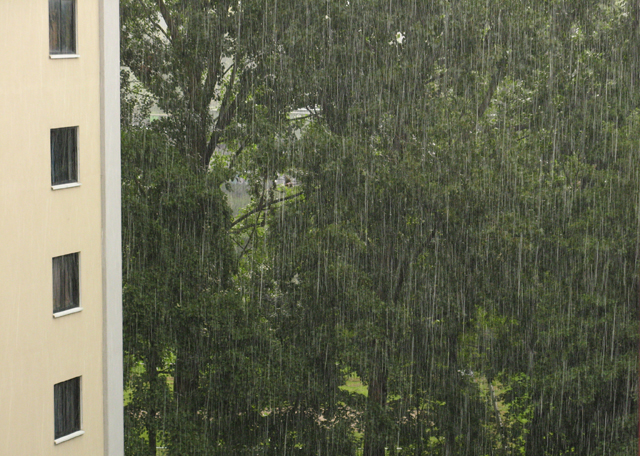
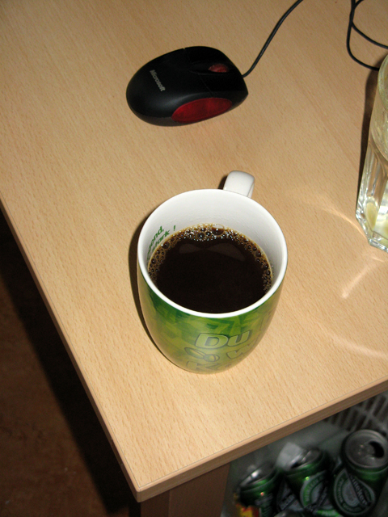
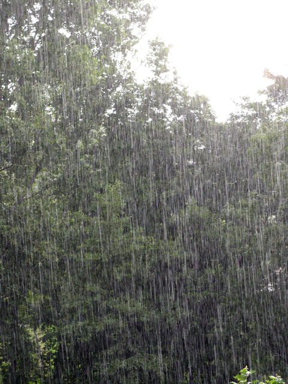
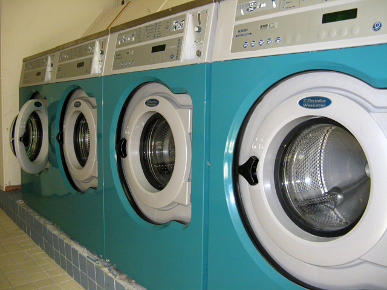
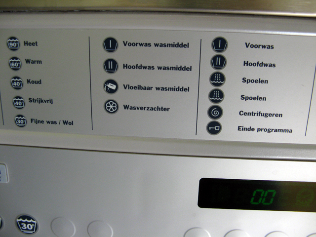
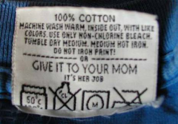
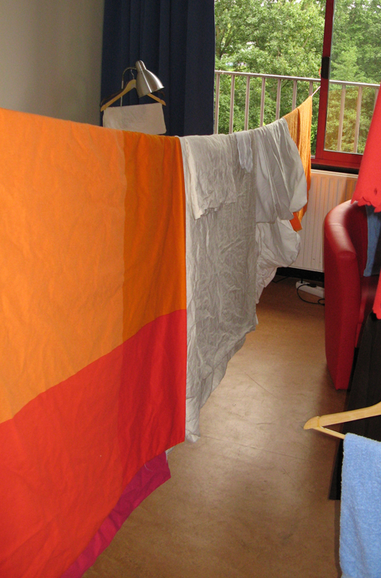

SAMSTAG, 1. SEPTEMBER 2007
Schon erstaunlich wie oft man die Zitate von M.K. (siehe auch "Work, work, build a house...") wiederverwenden kann (fast
wie die vom Konfuzius). Die Insider haben sicherlich verstanden, worum es geht:
WASCHTAG bei den Dudes!!!
Eigentlich sollte dieser schon etwas früher stattfinden, aber irgendeinem Dude "kam immer irgendwas dazwischen"... Nun
ja, vielleicht hatte auch keiner Lust.
Aber das Wetter war ja auch immer so gut,dass man einen Haufen anderer Sachen machen konnte.
Der erste Blick aus dem Fenster sah schon ganz vielversprechend aus...bei diesem Wetter entgeht einem ja auch wirklich
nichts.

REGEN!!! Zum ersten mal seit der Ankunft der Dudes in Amsterdam trat dieses seltene Naturphänomen auf...Tja, wo die
Dudes sind, scheint eben die Sonne! Nun aber genug...

Also Wetter gecheckt, Wetter schlecht! Als nächstes mal Kaffee machen...mmmmmhhh Kaffee guuuut!
Ok, Wetter gecheckt, Kaffee getrunken...dem Waschen stünde eigentlich nix mehr im Wege...(Armin ist inzwischen auch
wach)
Ok, vielleicht nochmal das Wetter checken um auch wirklich sicher zu gehen, dass nicht etwa schonwieder die Sonne
scheint und die Dudes sich auf ein echt dude-mäßiges Abenteuer in der Innenstadt stürzen könnten.

D'oh!!!
Ok...nützt nix! Die Dudes müssen sich nun wohl mit den Waschmaschinen anfreunden, obwohl diese schon etwas beängstigend
auf uns wirken.


Welches Programm soll man da am besten wählen? Hmmm, schnell mal aufs Etikett schauen, da steht sicher die benötigte
Information:

Prima...nun das mag vielleicht zu Hause funktionieren, aber hier sind die Dudes auf sich selbst gestellt. Ok...no risk,
no fun!
Die neue, rote Bettwäsche vom Ikea am besten nicht zusammen mit der weißen Bettwäsche waschen...hmh, das ist vernünftig.
Handtücher kann man sicher ziemlich heiß waschen, genauso wie Leintücher, Geschirrtücher usw... Das leuchtet jedem Dude
ein.
Also rein in die Maschine (aber nicht im Sinne von "rein", wie "sauber", sondern "rein" wie "hinein"). Denn rein solls
ja dann aus der Maschine kommen... ;o)
36 min. später raus aus der Maschine und rein in den Trockner...weitere 18 min. später ist es vollbracht. Die Dudes sind
nun fertige Hausmänner...
Nun noch etwas improvisieren, damit auch alles schön trocknen kann:

Tatatataaaaaaaaaaaaa! Fertig. Die Dudes haben geschafft und alle Frauen wollen sie heiraten, weil sie doch so gute
Hausmänner sind!